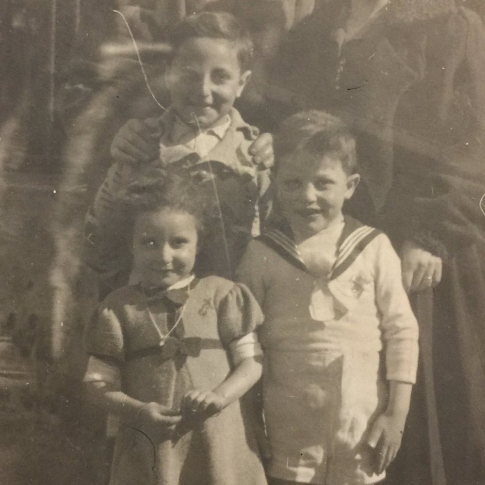

Portrait d’archive
Enfants Halimi
Josiane HALIMI
Elève à l’Ecole Jean Gerson (anciennement école rue lainerie) 1 rue Lainerie 69005 Lyon.
Nom : HALIMI
Prénom(s) : Josiane, Semba
Date naissance : 22/05/1938
Âge (ans) : 6
Lieu naissance : Batna
Pays ou département : Algérie
Lieu rassemblement : Lyon
Dernière adresse : 5, place de la baleine
Ville : Lyon
Code postal : 69005
N° Convoi : 77
Date déportation : 31/07/1944
Informations diverses : Josiane à la différence de ses frères, nés à Lyon, est née à Batna en Algérie. Elève à l’Ecole Jean Gerson (anciennement école rue lainerie) 1 rue Lainerie 69005 Lyon au moins en 1943/44. Arrêtée avec ses frères et ses parents Adolphe et Fortunée ainsi que Edmond Sandman hébergé chez eux et qui sera déporté avec eux; Internée avec son frère et sa sœur à l’Hôpital de l’ Antiquaille à Lyon du 08/07/1944 au 22/07/1944. Les parents sont internés à la prison de Montluc. Toute la famille est transférée au camp de Drancy le 24 juillet 1944 et déportée à Auschwitz le 31 juillet 1944, par le convoi n°77.
Halimi (Josiane, Semba), née le 22 mai 1938 à Batna (Algérie), décédée le 5 août 1944 à Birkenau (Pologne) (JO n°34 du 10/2/1994).
Halimi (Claude, Haéti), né le 30 novembre 1932 à Lyon (2e) (Rhône), décédé le 5 août 1944 à Birkenau (Pologne). Halimi (Jacques, Isaac), né le 17 décembre 1935 à Lyon (2e) (Rhône), décédé le 5 août 1944 à Birkenau (Pologne). Halimi, née Rehby (Fortunée, Messaouda) le 3 février 1902 à Batna (Algérie), décédée le 5 août 1944 à Auschwitz (Pologne). Halimi (Adolphe) née le 2 avril 1899 à Batna (Algérie) décédée le 15 mars 1945 à Natzwiller-Struthof (Bas-Rhin) JO1994p02296-02307.
Lieu de déportation : Auschwitz-Birkenau
Lieu de départ : Drancy
Nombre total de déporté·e·s du convoi : 1300
Gazé·e·s à l'arrivée : 726 (55,8 %)
Survivant·e·s en 1945 : 204 (15,7 %)
Claude HALIMI
Elève à l’Ecole Jean Gerson (anciennement école rue lainerie) 1 rue Lainerie 69005 Lyon.
Nom : HALIMI
Prénom(s) : Claude, Haéti
Date naissance : 20/11/1932
Âge (ans) : 11
Lieu naissance : Lyon
Pays ou département : Rhône
Lieu rassemblement : Lyon
Dernière adresse : 5, place de la Baleine
Ville : Lyon
Code postal : 69005
N° Convoi : 77
Date déportation : 31/07/1944
Informations diverses : Fils de Adolphe Halimi (02/04/1899, Batna, Algérie), facteur des PTT ou employé de pharmacie, et Fortunée née Rehby (03/02/1902, Batna, Algérie). Claude est scolarisé à l’Ecole Jean Gerson (anciennement école rue Lainerie, 1 rue Lainerie 69005 Lyon) de 1938/39 à 1943/44. Arrêté à leur domicile ainsi que ainsi que Edmond Sandman, enfant isolé hébergé chez eux, en transit pour la Suisse. Interné avec son frère et sa sœur à l’Hôpital de l’ Antiquaille à Lyon du 08/07/1944 au 22/07/1944. Les parents sont internés à la prison de Montluc. Toute la famille est transférée au camp de Drancy le 24 juillet 1944. Toute la famille est déportée à Auschwitz le 31 juillet 1944, par le convoi n°77. A l’arrivée à Auschwitz-Birkenau, seul Adolphe est sélectionné pour le travail. Fortunée, Claude, Jacques, Josiane et Edmund sont assassinés dans les chambres à gaz. (Source: “De la famille Halimi (Lyon, 1944) à Ilan Halimi (Paris, 2006)”). Adolphe est, par la suite, évacué d’Auschwitz vers le Stutthof, puis vers Echterdingen et enfin vers Vaihingen, deux camps-annexes du Struthof-Natzwiller. Il meurt d’épuisement généralisé le 15 mars 1945 (Source : Alrosen).
Halimi (Claude, Haéti), né le 30 novembre 1932 à Lyon (2e) (Rhône), décédé le 5 août 1944 à Birkenau (Pologne) (JO n°34 du 10/2/1994).
Halimi (Josiane, Semba), née le 22 mai 1938 à Batna (Algérie), décédée le 5 août 1944 à Birkenau (Pologne) (JO n°34 du 10/2/1994). Halimi (Jacques, Isaac), né le 17 décembre 1935 à Lyon (2e) (Rhône), décédé le 5 août 1944 à Birkenau (Pologne). Halimi, née Rehby (Fortunée, Messaouda) le 3 février 1902 à Batna (Algérie), décédée le 5 août 1944 à Auschwitz (Pologne).Halimi (Adolphe) née le 2 avril 1899 à Batna (Algérie) décédée le 15 mars 1945 à Natzwiller-Struthof (Bas-Rhin) JO1994p02296-02307.
Lieu de déportation : Auschwitz-Birkenau
Lieu de départ : Drancy
Nombre total de déporté·e·s du convoi : 1300
Gazé·e·s à l'arrivée : 726 (55,8 %)
Survivant·e·s en 1945 : 204 (15,7 %)
Jacques HALIMI
Elève à l’Ecole Jean Gerson (anciennement école rue lainerie) 1 rue Lainerie 69005 Lyon.
Nom : HALIMI
Prénom(s) : Jacques, Isaac
Date naissance : 17/12/1935
Âge (ans) : 8
Lieu naissance : Lyon
Pays ou département : Rhône
Lieu rassemblement : Lyon
Dernière adresse : 5, place de la Baleine
Ville : Lyon
Code postal : 69005
N° Convoi : 77
Date déportation : 31/07/1944
Informations diverses : Claude est scolarisé à l’Ecole Jean Gerson (anciennement école rue Lainerie, 1 rue Lainerie 69005 Lyon) de 1941/42 à 1943/44. Arrêté avec son frère, sa sœur et ses parents Adolphe et Fortunée ainsi que Edmond Sandman hébergé chez eux et qui sera déporté avec eux; Interné avec son frère et sa sœur à l’Hôpital de l’ Antiquaille à Lyon du 08/07/1944 au 22/07/1944. Les parents sont internés à la prison de Montluc. Toute la famille est transférée au camp de Drancy le 24 juillet 1944 et déportée à Auschwitz le 31 juillet 1944, par le convoi n°77.
Halimi (Jacques, Isaac), né le 17 décembre 1935 à Lyon (2e) (Rhône), décédé le 5 août 1944 à Birkenau (Pologne) (JO n°34 du 10/2/1994). JO
Halimi (Josiane, Semba), née le 22 mai 1938 à Batna (Algérie), décédée le 5 août 1944 à Birkenau (Pologne) (JO n°34 du 10/2/1994). Halimi (Claude, Haéti), né le 30 novembre 1932 à Lyon (2e) (Rhône), décédé le 5 août 1944 à Birkenau (Pologne). Halimi, née Rehby (Fortunée, Messaouda) le 3 février 1902 à Batna (Algérie), décédée le 5 août 1944 à Auschwitz (Pologne). Halimi (Adolphe) née le 2 avril 1899 à Batna (Algérie) décédée le 15 mars 1945 à Natzwiller-Struthof (Bas-Rhin) JO1994p02296-02307.
Lieu de déportation : Auschwitz-Birkenau
Lieu de départ : Drancy
Nombre total de déporté·e·s du convoi : 1300
Gazé·e·s à l'arrivée : 726 (55,8 %)
Survivant·e·s en 1945 : 204 (15,7 %)